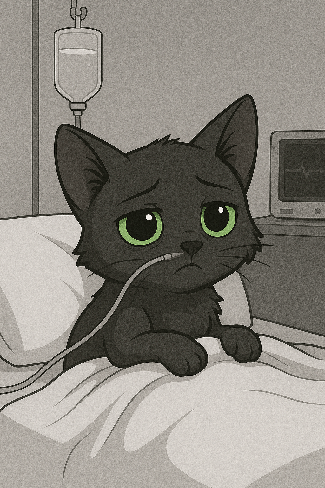

Quiero contar la historia de cómo llegué a la vida de dos personas
amorosas que me abrieron las puertas de su hogar y su corazón. Cuando
llegué, era apenas una pequeña gatita, estaba muy delicada y sin muchas
ganas de comer, con pocas fuerzas para descubrir el mundo que me
esperaba. Sin embargo, ellos nunca se rindieron conmigo. Con paciencia,
cuidados y mucho cariño me ayudaron a recuperar la esperanza y poco a
poco comencé a sentirme más fuerte. Gracias a ese amor incondicional
tuve la energía suficiente para visitar al médico y enfrentar los días
más difíciles. No fue un camino fácil, hubo momentos de dolor y
cansancio, pero jamás me dejaron sola. Siempre estuvieron a mi lado,
acompañándome, acariciándome y recordándome lo valiosa que era para
ellos. Incluso cuando tuve que estar hospitalizada, no dejaron de
visitarme ni un solo día, llevándome consigo un pedacito de hogar en
cada mirada y cada palabra suave. Ese amor verdadero me dio fuerzas para
seguir adelante. Hoy, al recordar todo lo que pasamos, sé que encontré a
la familia perfecta: dos corazones enormes que me adoptaron y me
demostraron que el cariño sincero puede sanar hasta las heridas más
profundas. 🩶